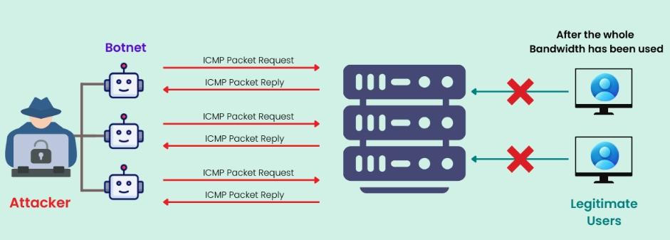

DDoS高防”通常指的是针对DDoS（分布式拒绝服务）攻击的高等级防护服务。这类服务利用多种技术手段和资源来检测、识别和抵御DDoS攻击，确保网络和应用的安全与可用性！
DDOS是Distributed Denial of Service的缩写，分布式拒绝服务，解发DDOS攻击的过程是这样，有人在互联网上控制了大量的电脑，在某一时刻对某服务器发起大量的访问请求，比如对网站进行访问，瞬间网站无法响应真实用户的访问了，服务器响应不过来了，即使有响应，也会变得异常缓慢，如果经常遇到的这样的情况，访问你网站的访客就会放弃，去访问其它的网站，这样就达到了发起攻击的这个人的目的。
还有其它很多层面的攻击模式，有的自己弄个DDOS工具软件模拟很多电脑发起大规模访问请求,或者有其它的诉求，比如破解远程登录密码，登录后释放勒索病毒，给被攻击者造成巨大损失。
与其他网络攻击不同，DDoS 攻击不会利用网络资源的漏洞来入侵计算机系统。相反，它们使用标准的网络连接协议，如超文本传输协议（HTTP）和传输控制协议（TCP），向端点、应用程序或其他资源发送超出其处理能力的流量。网络服务器、路由器或其他网络基础设施在任何时间只能处理有限数量的请求和维持有限数量的连接。通过占用资源的可用带宽，DDoS 攻击会阻止这些资源响应合法的连接求和数据包。
概括地说，DDoS 攻击分为三个阶段：
第 1 阶段：选择目标
DDoS 攻击目标的选择源于攻击者的动机，而攻击者的动机可能多种多样。黑客利用 DDoS 攻击向组织勒索钱财，要求支付赎金才能结束攻击。另一些黑客则利用 DDoS 从事激进活动，攻击他们不认同的组织和机构。或者，不法分子利用 DDoS 攻击竞争企业，以使对方产生巨大经济损失流失客户。同时，一些国家在网络战中也常使用 DDoS 战术。
最常见的 DDoS 攻击目标包括：
在线零售商：DDoS 攻击会导致零售商的数字商店瘫痪，使客户在一段时间内无法购物，从而对零售商造成重大经济损失；
云服务提供商：亚马逊网络服务（AWS）、微软 Azure 和谷歌云平台等云服务提供商是 DDoS 攻击的热门目标。由于这些服务托管着其他企业的数据和应用程序，黑客只需一次攻击就能造成大范围的中断。2020 年，AWS 遭到了大规模 DDoS 攻击，最高峰时，恶意流量达到每秒 2.3 太比特。
金融机构：DDoS 攻击可导致银行服务脱机，使客户无法访问其账户。2012 年，美国六家主要银行遭到了协同的 DDoS 攻击，这可能是出于政治动机的行为。
软件即服务（SaaS）提供商。与云服务提供商一样，Salesforce、GitHub 和甲骨文等 SaaS 提供商也是极具吸引力的目标，黑客基于提供商可以同时破坏多个组织。2018 年，GitHub 遭受了当时有记录以来最大的 DDoS 攻击。
游戏公司：DDoS 攻击会使网络游戏服务器流量激增，从而中断游戏。这些攻击通常是由心怀不满的玩家以个人恩怨为由发起的，最初针对 Minecraft 服务器构建的 Mirai 僵尸网络就是这种情况。
第 2 阶段：创建（或租用或购买）僵尸网络
DDoS 攻击通常需要一个僵尸网络（一个由连接互联网设备组成的网络），这些设备感染了恶意软件，黑客可以远程控制这些设备。僵尸网络中的设备可包括笔记本电脑/台式电脑、手机、物联网设备以及其他消费或商业终端。这些被入侵设备的所有者通常并不知道它们已被感染或正被用于 DDoS 攻击。
一些网络犯罪分子从零开始建立僵尸网络，另一些则购买或租用预先建立的僵尸网络，这种模式被称为 "拒绝服务即服务（denial-of-service as a service）"。
注：并非所有 DDoS 攻击都使用僵尸网络，有些攻击利用未感染设备的正常运行达到恶意目的，见下文 "Smurf 攻击"。
第 3 阶段：发起攻击
黑客命令僵尸网络中的设备向目标服务器、设备或服务的 IP 地址发送连接请求或其他数据包。大多数 DDoS 攻击依靠暴力手段，发送大量请求以耗尽目标系统的所有带宽；有些 DDoS 攻击则发送数量较少但更复杂的请求，要求目标系统花费大量资源进行响应。无论哪种情况，结果都是一样的：通过攻击流量压倒目标系统，造成拒绝服务，阻止合法流量访问网站、网络应用程序、API 或网络.
黑客经常通过 IP 欺骗来掩盖攻击来源，网络犯罪分子通过这种技术为从僵尸网络发送的数据包伪造源 IP 地址。在一种名为 "反射（reflection） "的 IP 欺骗中，黑客会让恶意流量看起来像是从受害者自己的 IP 地址发送的。

DDoS高防服务是指专门设计用来预防、检测和应对分布式拒绝服务（DDoS）攻击的安全解决方案。DDoS攻击通过大量的虚假流量或请求来淹没目标系统，从而使其无法正常响应合法用户的请求。DDoS高防服务旨在确保网络和应用的可用性，保护企业的在线服务不受这些攻击的影响。
主要服务如下：
| AI智能检测 | 基于流量行为，AI实时监控分析，智能识别，同时最大限度减少误报。 |
|---|---|
| 加密保护 | 自动实时签名，随攻击动态适应特征，无需加密秘钥。 |
| 零日攻击防护 | CDN5可以在20秒内检测出异常攻击特征，分析生成最佳形态，准确防御零日攻击和未知攻击。 |
| 灵活部署 | 提供DDOS云防护，硬件防护，及混合防护，支持SDK，API，DNS等多种部署方式，匹配APP，网站等客户用例。 |
| 全面托管 | CDN5技术支持专家，全流程复杂接入和指导部署，提供全天候技术支持，确保沟通和业务流畅。 |
| 多层防护 | 预设多层（网络层、传输层、会话层、应用层）防护，根据不同特征智能介入干预，确保服务保持运行及技术介入调整弹性。 |
DDoS高防服务的应用场景
金融
金融行业因为涉及重要资产，常常是黑客攻击的首要目标，攻击可能导致客户无法访问或者交易，需要接入高防CDN确保交易可用及流程且保护用户数据和资产安全。
查看DUOTU解决方案
游戏
无论是娱乐游戏还是有资产交易的在线游戏，黑客的攻击会导致玩家无法正常游戏，导致用户流失，需要接入DUOTU游戏盾来确保服务器的稳定，玩家体验顺畅。
查看DUOTU游戏盾解决方案
1.保障服务稳定运行：DDOS攻击会导致你的服务中断，用户流失，给企业造成无法弥补的损失，DUOTU的DDOS高防服务可以让你保持业务稳定运行，无惧DDOS和CC攻击。
2.提供品牌影响力：如果你的服务经常中断，用户会质疑你企业的防护能力，从来导致客户不信任，通过接入DDOS高防服务可以让业务安全增加，加载速度提升，网络通信延迟降低，有助于增强用户信任。
3. 降低经济损失：DDOS攻击会导致业务中断，直接或者间接导致经济损失，如提前部署防护，则可以完全避免这些损失，且省去被攻击后再接入的繁琐流程。
4. 支持业务增长：随着用户的增加，在线流量也会增加，CDN不仅增强安全还能加速内容分发，降低企业宽带成本，促进业务持续增长。